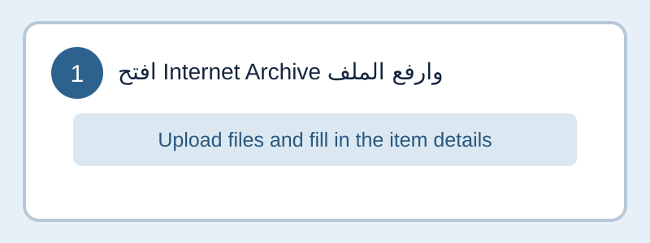
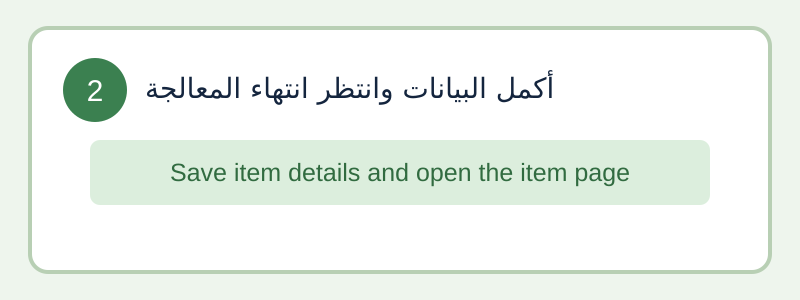
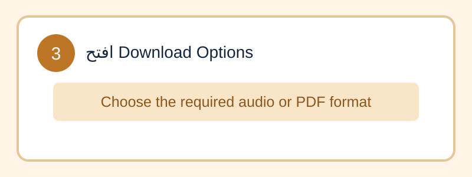
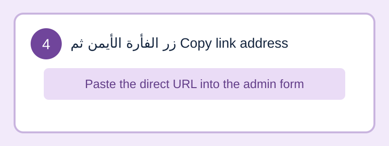

لوحة إدارة المحتوى
إدارة المواد العلمية والتصنيفات والعناصر المستقبلية وفق الصلاحيات (RBAC).
نظرة عامة
المحتوى
| العنوان | التصنيف | الحالة | المدة | التاريخ | إجراءات |
|---|
إضافة مادة جديدة
دليل الروابط المباشرة
كيف تحصل على رابط الصوت أو PDF؟
استخدم رابطًا عامًا مباشرًا؛ لا تستخدم رابط صفحة المعاينة. افتح القسم المناسب للاطلاع على الخطوات المصورة.
Internet Archive

افتح Internet Archive، ارفع الملف، ثم املأ العنوان والوصف والبيانات المطلوبة.
أكمل بيانات العنصر وانتظر انتهاء الرفع والمعالجة.
افتح صفحة العنصر، مرر إلى Download Options، ثم اضغط بزر الماوس الأيمن على صيغة الملف المطلوبة.
اختر Copy link address والصق العنوان في حقل رابط الصوت أو PDF هنا.
Google Drive
- ارفع الملف إلى Google Drive ثم اضغط عليه بزر الماوس الأيمن واختر Share.
- غيّر الصلاحية من Restricted إلى Anyone with the link، واجعل الدور Viewer.
- اضغط Copy link والصق الرابط في حقل الصوت أو PDF. سيحوّل النظام تلقائيًا رابط العرض إلى رابط تنزيل مباشر.
يجب أن يكون الملف عامًا؛ الروابط التي تتطلب تسجيل الدخول لن تعمل للمستخدمين.
إدارة التصنيفات
| التصنيف | عدد المواد | إجراءات |
|---|
إدارة المستخدمين
| الاسم | اسم المستخدم | الدور | الحالة | إجراءات |
|---|
سجل العمليات (Audit Log)
| الزمن | المستخدم | الإجراء | الكيان | النتيجة |
|---|
لا توجد سجلات.